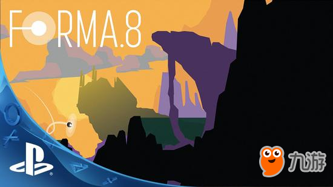

《Forma.8》是一款类“恶魔城-银河战士”（Metroidvania）的集冒险、动作、探索等元素的解谜游戏， 该作于2011年立项，后经多次跳票，又有“一代失踪”的神作之名，终于在早前登陆 Vita， 如今也同时宣布将于本周四（6月15号）登陆 iOS 平台。
《Forma.8》有着很典型的科幻故事的脉络，甚至可以说是有一些“腻歪”：玩家将操作代号为 forma.8 的小型无人探测器，孤身在外星球上旅行。由于一场意外，你和同伴失散了，你的每一项任务都是生与死的抉择。你要找到遗失的强大能源并使其恢复运转，希望这一切还来得及。。。。。。在 Metroidvania 式的制作范式之下，玩家可以体验到多种类型元素的混合，既有深空的探索，遭遇奇怪居民，展开激烈战斗，亦有通过动作元素的展现来破解谜题等。有用户称其为“must buy title！！”（必买之作），并非没有道理，这类元素相结合的作品向来都不乏捧场客。
从鲜艳的配色来看，《Forma.8》跟另一款名作《破碎大陆》（Badland）太像了！同样是解谜、动作和探索等元素的叠加，同样是治愈系与神秘交叉的色彩和艺术渲染，两者之间确实有异曲同工之妙。如果非要说成是翻版的《破碎大陆》，并不是信口开河。但是，从时间线上来看，《Forma.8》的立项更早一些，借鉴之说自然没了根基。
Metroidvania 本身就有着统一的制作范式，因此，不管是《Forma.8》，还是《破碎大陆》，抛开美术视觉以及谜题的设定的差异，两者几乎并没有根本性的不同。实际上，市面上这类游戏又岂止《Forma.8》和《破碎大陆》呢？正所谓“万变不离其宗”。